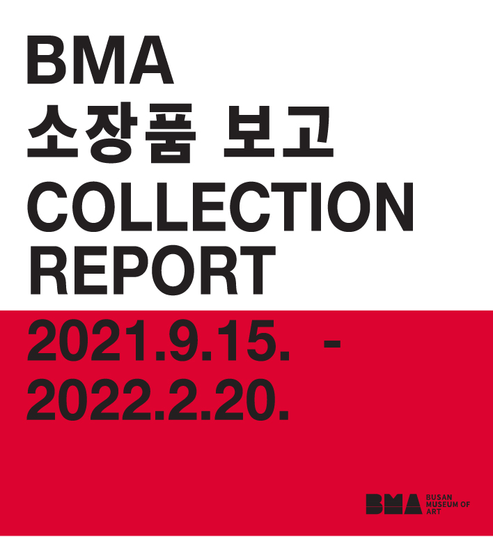
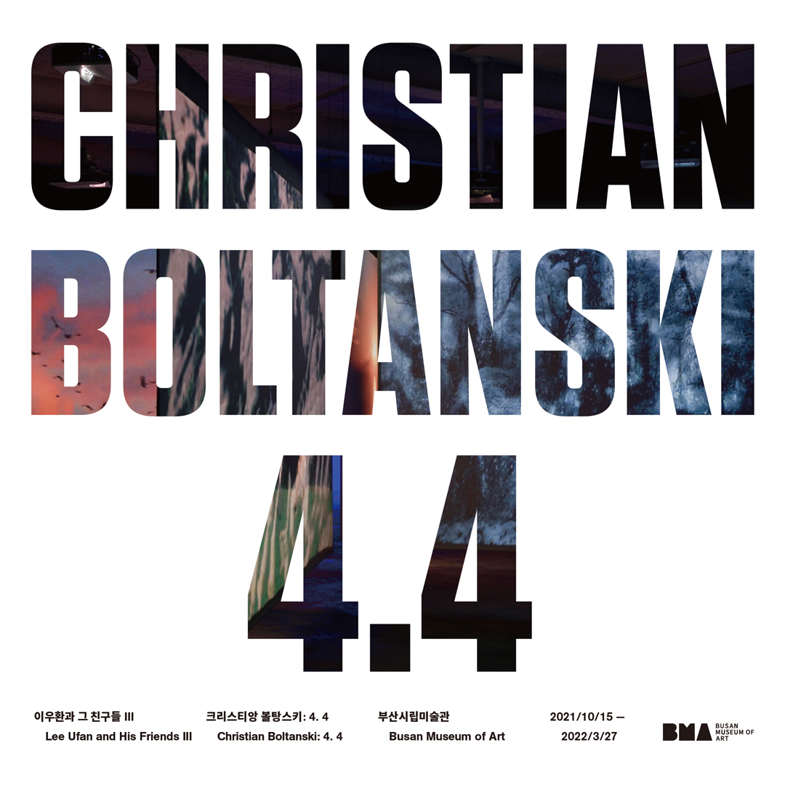
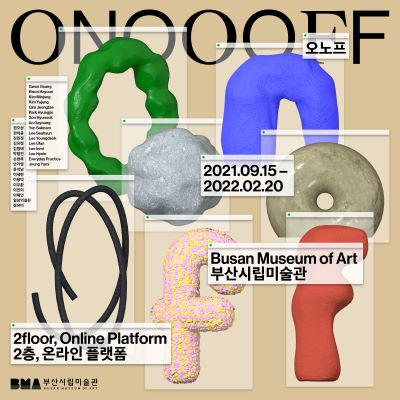

busan museum of art
부산시립미술관
이용안내
전시
교육/행사
어린이갤러리
소장품
참여마당
BMA 소장품보고
본관 2층오노프
본관 2층, 온라인 플랫폼EN | 中
Mondrian
피트 몬드리안
네덜란드의 근대 미술 화가이다. 몬드리안은 추상화의 초기 화가에 속하며, 네덜란드 구성주의 회화의 거장이다. 빈센트 반 고흐와 야수파에서 많은 영향을 받은 예술가이다.
몬드리안은 테오 판 두스부르흐가 만든 데 스틸(De Stijl) 예술 운동의 중요한 구성원이다. 그는 자신이 신조형주의(Neo-Plasticism)라고 부른 비구상적인 형태를 발전시켰다. 그의 그림들은 가로와 세로의 검은 선의 격자(grid)와 삼원색을 사용한 것들이 많다.


